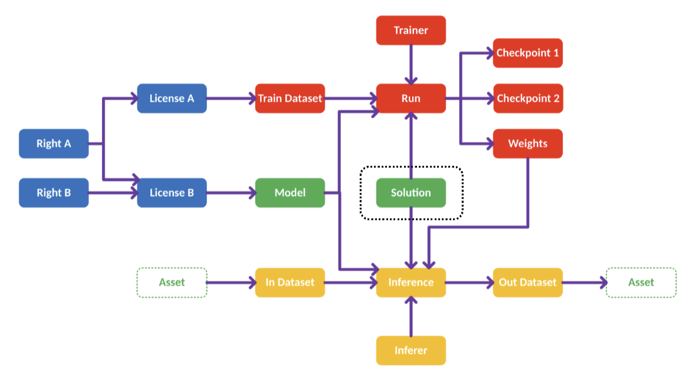
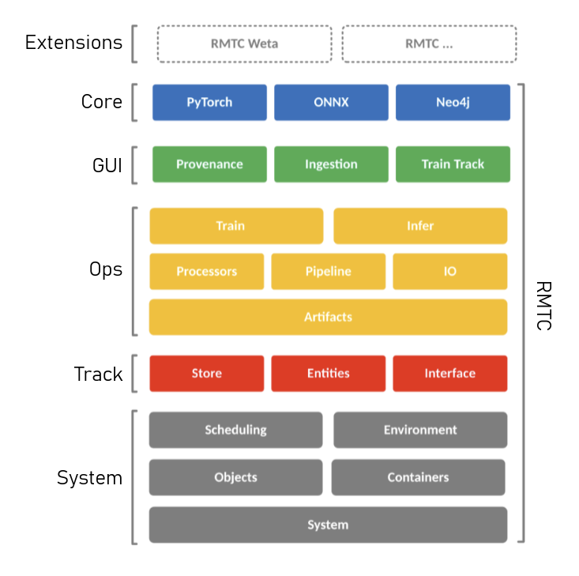

A clean layered Python & C++ architecture designed for extensibility, facility pick-and-mix adoption, and provenance-first operations.
Qt-based GUIs for ingestion, tracking & inference, Flask REST API (WIP) for remote access, and DCC plugins for Nuke and other production tools.
Training subsystem (PyTorch trainers, pluggable schedulers), inference engines, process stacks for invertible tensor transformations (color, channels, spatial), and pluggable I/O adapters for EXR, ONNX, USD, and other formats. Builders convert models to DCC-native formats (e.g., Nuke CAT).
First-class entities: Models, Weights, Datasets, Checkpoints, Runs, Inferences, Solutions, and Licenses. All artifacts are configurable to be immutable; relationships form a directed provenance graph. The Store abstraction plugs in Apache AGE (PostgreSQL), Neo4j, or other backends. Lazy loading and just-in-time sync minimize database round trips.
Factory system for dynamic instantiation of RMTC classes via fully qualified type names (e.g., rmtc.core.model.TorchModel-1.0.0). YAML-driven module registration with whitelisting. Base Object and Property classes providing type-safe attribute storage with visibility, ownership, and provenance direction tracking. Config manages database credentials and system settings.
Apache AGE (PostgreSQL extension) is the reference implementation; Neo4j and JSON file stores are also supported. All backends expose the same abstract Connection and Queries interfaces, so facilities can swap backends without touching application code.

Classes accept injected dependencies (trainers, schedulers, I/O implementations, asset managers) rather than hard-coding concrete implementations. The Factory resolves type names at runtime, so facilities tailor RMTC to their infrastructure without code changes.
Artifacts are ideally considered immutable once created. Updates happen via variants (format equivalents) or new artifacts only. This is intended to keep the recorded provenance chain from being silently rewritten, supporting — but not on its own constituting — audit and compliance review. Though as with all VFX workflows, there is flexibility to adapt this workflow.
Entities fetch only light representations initially; full properties load on first access. This minimizes database round trips and supports efficiently working with millions of artifacts in the graph.
Facilities can adopt the tracking layer alone to wrap their existing training & inference pipelines, or go full-stack and use the provided operations infrastructure. Every component is designed as an independent, pluggable subsystem.

Python, PyTorch, Apache AGE, Neo4j, Tensorboard, ONNX
EXR, USD, Skeletons & Animation (WIP), Point clouds (WIP), Meshes (WIP)
API, Qt GUI, C++ (WIP)
Flask REST API & WebSocket support proposed
Every layer of RMTC is designed for tracking, extensibility, and facility-scale deployment.